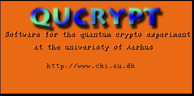
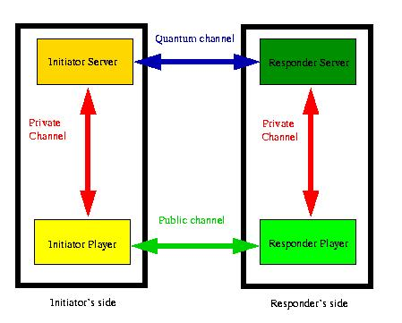

Introduction
QuCrypt is the software
developped for driving the quantum crypto experiment of the Center
for KvanteInformatik located at the University
of Aarhus. The software, written in Java, implements all
steps needed in order for quantum secret-key distribution to take place.
In addition, it provides an interface with the real quantum channel used
in the experiment, it also allows to run quantum key distribution in a
demo mode without need for any specialized hardware. In this document,
we describe the software achitecture, the implemented functionalities,
and the installation procedure.
General Architecture
The software aims at providing an environement
as close as possible to a real situation where a 2-party quantum
protocol might be used. Although this release only provides secret-key
distribution, the architecture allows any 2-party cryptographic protocol
to be included in the future. The two parties involved in a protocol
can run on a single machine or can be connected remotely through a socket
connection. In addition to the two parties, servers for the
quantum connection are provided. These servers can be used either to simulate
a quantum channel or to interface both ends of a real quantum channel.
As for the players, the servers can be run on a single machine or remotely.
The
output generated by a protocol execution is a collection of HTML files
giving feedbacks for all relevent phases of the protocol.
The software architecture contains 4 main entities:
Initiator Server:
Responsible for the initiator side of the quantum channel. It transmits
qubits through the quantum channel and send them back to the initiator
player. The quantum transmission is made according to the quantum coding
the players decided to use during the protocol.
Responder Server:
Responsible for the responder side of the quantum channel. It receives
the qubits sent by the initiator server and sends back to the responder
player the result of the measurements applied to them. The measurements
are selected according to the quantum coding the players agreed upon.
Initiator Player:
Is the player initiating the request for an execution of a quantum protocol.
The initiator player is responsible for choosing the protocol together
with the parameters to be used. It also establishes a connection with the
initiator server from which the quantum information is obtained.
The initiator player is usually assumed to run together with the initiator
server on the same machine.
Responder Player:
Is the player responding to the request and therefore connected to the
initiator player and the responder server. From the responder server,
the responder player gets the result of the quantum transmission.
The responder player is usually assumed to run together with the responder
server on the same machine.
Each of the 4 entities are separated processes and can
therefore be run on different machines. The connections (or channels)
between the entities of 3 types:
Public Channel: Is a channel offering no
privacy. The messages can be eavesdropped freely. However, we assume the
public channel to be authenticated which means that the eavesdropper cannot
substitute the message transmitted for one of its own. Authentication of
the messages is not enforced by the public connections used by the software.
In order to enforce authentication over a non-authenticated channel, one
should add authenticated codes using classical cryptographic techniques.
Public channels are usually assumed to be available for qantum secret-key
distribution to take place.
Private Channel: Is a channel enforcing
both privacy and authentication of the transmitted messages. Such
channel is not required for quantum key distribution but is assumed for
the connection between the player and the server. If the initiator
(or responder) player and the the initiator (resp. responder server)
server are running on the same machine and that machine is protected against
intruder then the channel between the server and the player can be safely
assumed private. However, if the player and the server are not running
on the same machine then the connection between them must be assumed private
for the security of the scheme to remain.
Quantum Channel:
Is a channel allowing the transmission of quantum states. It also allows
the transmission of classical information. That is, the quantum channel
is shadowed by a public and classical channel that does not require any
privacy but yet does require authentication (not yet implemented) in order
to provide security. The classical channel is only used to identify the
pulses sent on the initiator side that have been received on the responder
side.
The entities and the connections between them are shown
here:

The Support for Quantum Coding and Protocols
QuCrypt provides a library of quantum and classical
primitives for quantum cryptography. Those primitives can be used easily
to construct larger protocols thus allowing to enlarge the library of supported
protocols with a minimum of work. Protocols can specialize existing
ones with minimal overhead. Existing protocols can be included
as subprotocols into new ones the natural way. Other protocols like
Quantum
Bit Commitment or Quantum Oblivious Transfer could be added
easily on top of the existing primitives. For the time being only the BB84
quantum key distribution and the B92 quantum
key distribution protocols are provided . Using JAVA for the
implementation of QuCrypt allows protocols to be portable to almost
any platform. More information about the current support for quantum
protocols can be found here.
QuCrypt also provides general support for quantum
coding of classical information. Any coding can be added easily to the
supported ones. For the time being, only the BB84
and the B92 quantum coding schemes are provided.
The Output Generation Package
QuCrypt allows to generate complete information about
protocol executions as a collection of HTML pages accessible through an
index file located at qrypto/templates/initiatorfor
the initiator player and at qrypto/templates/responder
for the responder player. To each protocol, a template is provided
for HTML output generation. The information appearing in the HTML
files shows the details of the execution including statistics, results
of all subprotocol executions, and some extra explanations for educational
purposes. The results of the output generation for some
can be visited.
Implementation Details
QuCrypt is written in JAVA 1.1.7 using SWING
1.1.1beta2.
It has been developped using AnyJv1.2
and some QuCrypt's gui relies on libraries provided by AnyJ.
The actual version of QuCrypt is v1.0beta1.
Work is still in progress which includes bug fixes, extensions, and modifications
of some of the already existing components. Consult the todo-list
page for more information about this. The extra libraries provided
within AnyJ and required for running QuCrypt are:
-
aelfred.jar (from com/microstar/xml)
-
rutime.jar (from de/netcomputing/runtime)
QuCrypt is open source and is constantly undergoing
modifications. Everybody is welcome to add functionalities and/or modify
the existing ones as long as it is made clear that QuCrypt has been
modified and the product is not used for making profits.
We'd be happy to add your modifications to the next version
of the package. You can send an e-mail
describing
your addition together with the source code.
About the Physical Implementation
The primary goal of QuCrypt is the provide an easy
to use and flexible interface to our physical
implementation. Some components have been implemented to accomodate
our particular needs. This is the case for the initiator
server and the responder server when
real
quantum transmission is executed. The plugs of the servers to the quantum
channel is therefore implementation-dependant. For the time being
it is achieved through an extra layer of communication between the servers
and the quantum data grabber
which is a separate application running at each end of the quantum channel
and responsible for dealing with specialized hardware. The data grabber
is not provided within QuCrypt. If QuCrypt was to be used
with a different physical implementation then an appropriate data grabber
should be provided for communication with the provided servers. With QuCrypt,
it is possible to use our experiment remotely. For instance, party A
could launch the initiator's side of QuCrypt with a connection to
the sender's end of the quantum channel while party B could launch
the responder's side with a connection to the receiver's end of the quantum
channel. A and B can be anywhere although the security of
the resulting key cannot be established if the connection between A
and the quantum channel plus the connection of B and the quantum
channel is not private.
Installing QuCrypt
In order to be able to run QuCrypt, you must have
JAVA v1.1.7 and SWING v1.1.1 or above as soon as JAVA is
of version previous to v1.2. QuCrypt will be ported to JAVA
v1.2
soon. The full package comes in one archived-zipped file containing:
-
Source code for QuCrypt v1.0beta1,
-
Executable for the JAVA virtual machine,
-
Software documentation,
-
Documentation of the CKI experiment, and
-
More general documentation and links to quantum cryptography.
QuCrypt contains the following packages all located
below the qrypto/ directory. Packages are
in the following directories including also the class files:
-
gui:which contains all
interfaces,
-
server: contains the
implementation of the servers,
-
qommunication:
which contains the communication library for simulating quantum transmission
as well as for normal classical communication ,
-
protocols: all supported
protocols are implemented there,
-
htmlGeneration:
is responsible for generating the output in HTML format,
-
templates: contains
all templates filled up during HTML generation. Each protocol producing
an output has an associated template
-
exception:some special
exceptions.
Before launching QuCrypt, the CLASSPATH environement
variables must be set as follow:
CLASSPATH=/usr/lib/jdk1.1/lib/classes.zip:
/<qrypto_directory>:/<swing-1.1.1beta2_directory>/windows.jar:
/<swing-1.1.1beta2_directory>/swingall.jar:
/usr/local/anyj1.2/lib/runtime.jar:
/usr/local/anyj1.2/lib/aelfred.jar
Launching QuCrypt is done by calling the
java virtual machine interpreter with the Launch class:
What to do once QuCrypt has been successfully launched
can be found here.